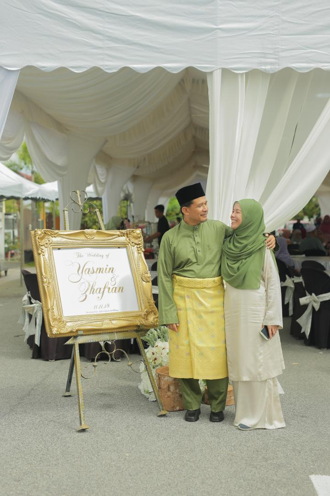

ROSLIDAH BINTI OMAR (12 SEPT 1964)
ROSLIDAH BINTI OMAR (12 SEPT 1964)
AHMAD YASSIN BIN JUHARI (20 JAN 1958)
YASMIN AMIRA BINTI AHMAD YASSIN (09 APRIL 1990) Her Husband, EMIR ZHAFRAN BIN AZIZAN (02 DECEMBER 1988) Her Son, EMIR AIDAN AARIZ BIN EMIR ZHAFRAN (24 JULY 2019)
 YASMIN NAJLAA BINTI AHMAD YASSIN (20 OCTOBER 2000)
YASMIN NAJLAA BINTI AHMAD YASSIN (20 OCTOBER 2000)